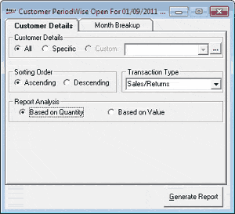
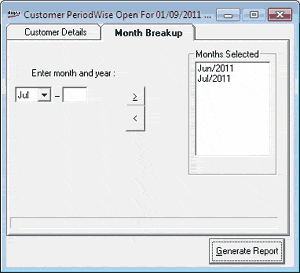
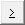
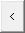

The Period-wise report provides information on sales made to customers for the selected month(s). It gives the purchasing pattern of each customer.
This report can be generated:
For all customers
For a specific customer
Based on transactions pertaining to sales, sales returns or both
Based on quantity purchased or returned by customers
Based on sales value
How to reach: Reports > MIS > Customer Offtake > Period-wise
The Customer PeriodWise window is displayed. The Customer Details tab is as shown.

Customer Details: Select All or Specific to identify the customer/s about whom the report has to be generated. If you have selected Specific, select the customer from the list or click  to open the Browse window and select.
to open the Browse window and select.
Sorting Order: Select Ascending or Descending to sort the lines in the report accordingly.
Transaction Type: Select Sales, Returns or Sales/Returns to include the corresponding transactions in the report.
Report Analysis: Select Based on Quantity or Based on Value to display transaction details in terms of corresponding values.
Click the tab Month Breakup to open the tab.

Enter month and year: Select the month from the list and enter the year. Click

to add to the list Months Selected. Click
to remove any month from the Months Selected list.